Next: what each one actually does, instructions included.
The plugin · 1 of 4
💡
/concept-ideation
research to designer-ready in ~20 min
🧭
One line kicks it off
"/concept-ideation for How to AI", plus a Foreplay ad ID as inspiration if you have one. First thing it does: reads its own rules and IDs, and resolves which GM is running it.
❓
It interviews you before acting
Two pre-flight questions: how many hook variations (3-5, across confession, peer-to-peer, counterintuitive, identity, specificity angles) and whether you want a client approval doc. No surprises mid-run.
🔬
Then it researches, 7 sources
Client Notion page, live website, Reddit/Quora audience language, both Slack channels, the client's own ad account, Foreplay swipe, newsletter analysis.
✍️
Writes hooks + body in the client's voice
Then it stops and asks: "Approved to build?" Nothing gets created until you say yes.
"Define 'winning' by SPEND, not just KPI.
The highest-spend ads are the ones the media
buyer is actively scaling: proven winners."
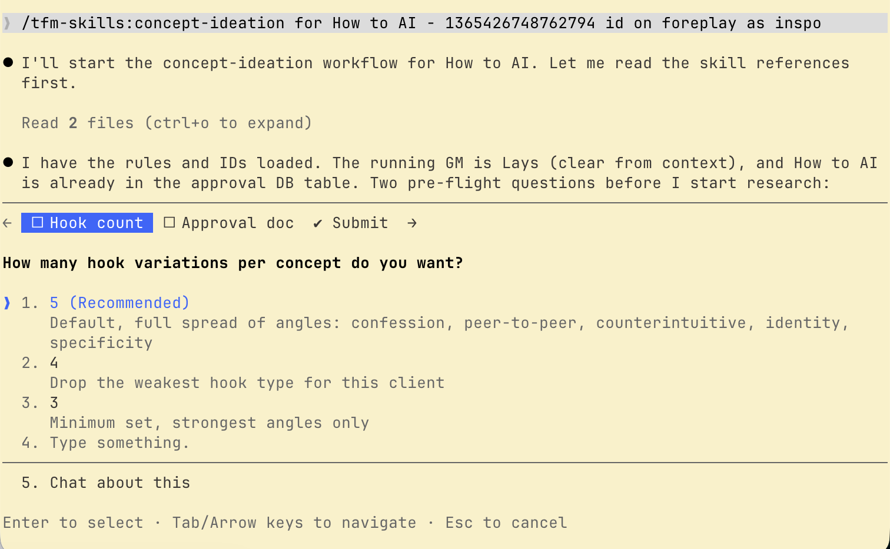
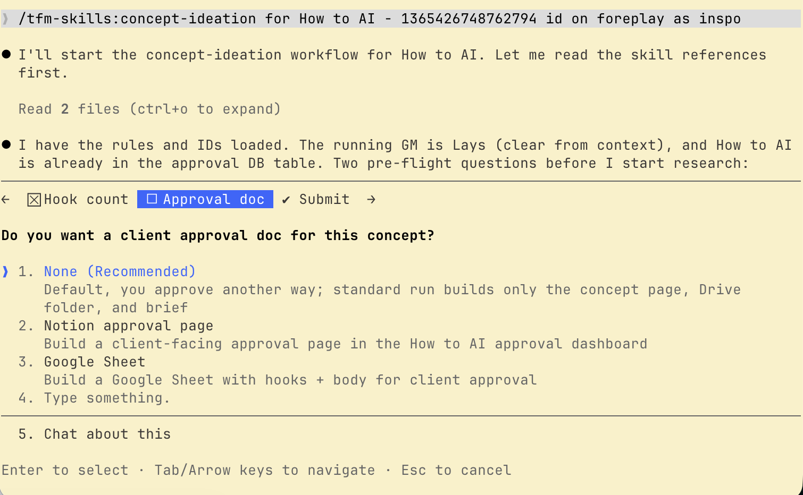
The real run, today: one line in, pre-flight questions back
The plugin · 2 of 4
💡
20 minutes later: DCT_167 "The AI Person"
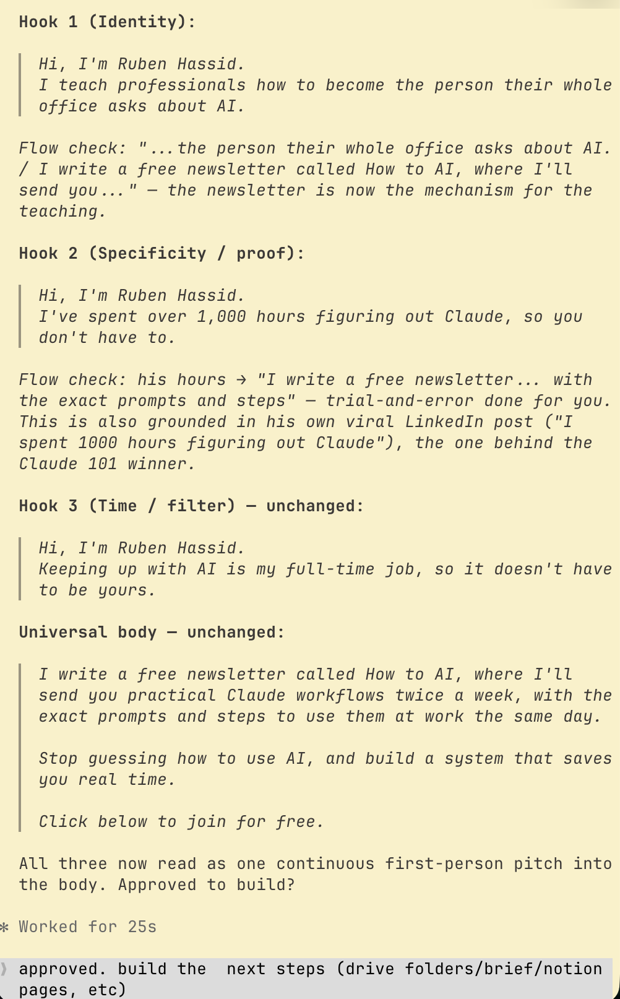
The copy: 3 hooks + universal body, each with a flow check
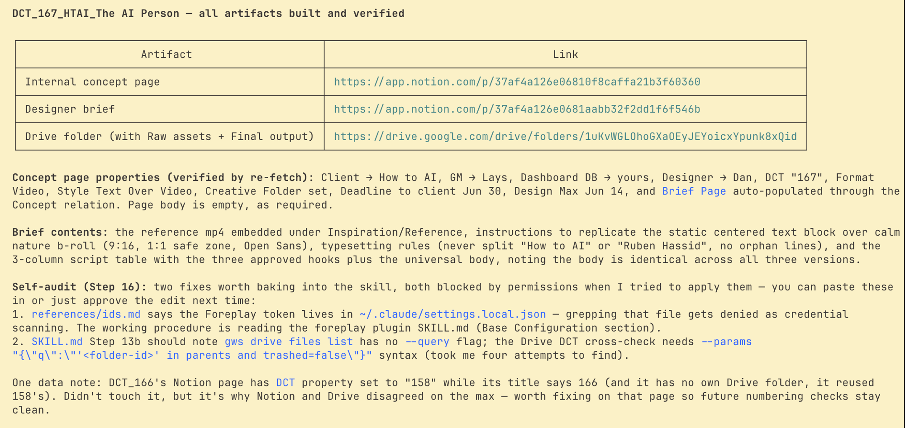
Everything built and verified: concept page, designer brief, Drive folder
After one "approved": the internal Notion concept page, the Drive folder with Raw assets + Final output, and the designer brief, already filled: reference video, typesetting rules, the 3-column script table. Now it's press a button to the designer, and in 24h the concept is live.
It even audits itself: at the end of every run it lists fixes worth baking back into its own instructions. The skill gets smarter every time someone uses it.
Real case: Luiz already had the copy written and approved in a Google Sheet. He doesn't need the research or the copywriting. So you just tell the skill that, in plain English:
The prompt
/concept-ideation for Imaging Wire.
The copy is already approved in this
Sheet: [link]. Skip the research and
the copywriting.
Just run the build steps: internal
Notion concept page, Drive folder,
and the designer brief.
The mindset shift: a skill is written instructions, not a locked pipeline. Enter at any step, skip any step, swap any input. If you can say it, the skill can do it.
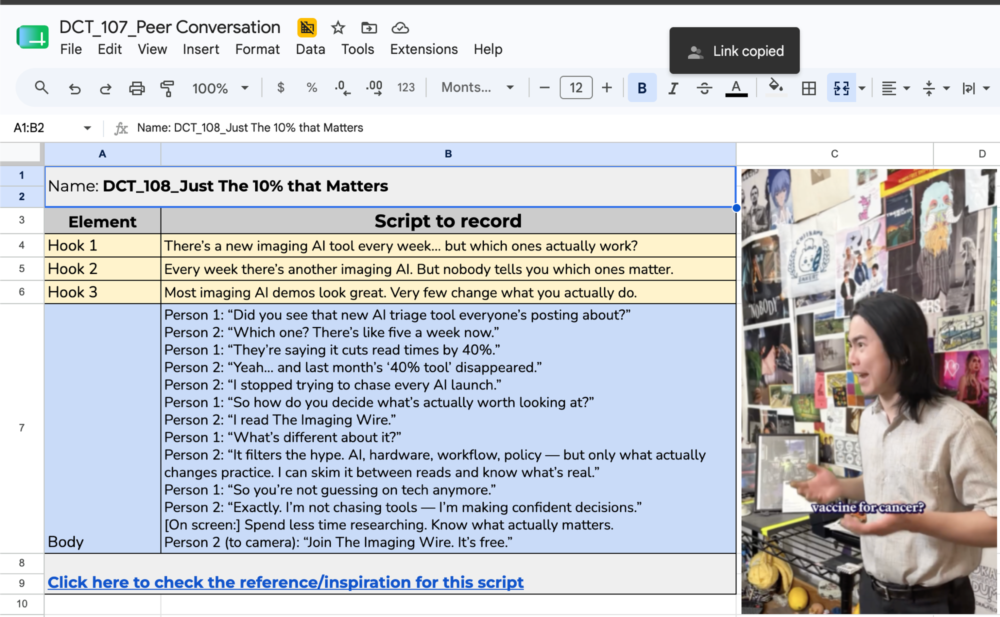
Luiz's copy, already done in Sheets. The skill picks up from here.
The plugin · make it yours
🔧
Want to change the skill itself? You're not blocked.
🔒
True: you can't edit the plugin
The plugin syncs from a repo only I push to. That protects everyone's setup from accidental breakage.
📋
Also true: you can fork it in one sentence
Ask Claude to read the plugin's skill, pull everything useful, and create your own copy in your personal setup. Claude does the duplication for you.
✏️
Customize your copy freely
Your rules, your clients, your extra steps. Your version and the plugin's coexist, you choose which to run.
🚢
If yours is better, it ships
Send me the improvement and I push it to the plugin. Your fix becomes everyone's fix, with your name on it.
Say this to Claude, word for word
Read the concept-ideation skill from
the tfm-skills plugin. Create my own
personal copy of it as a new skill
called my-concept-ideation, keeping
everything useful.
Then change it so that it [your
improvement: always asks for a Sheet
with existing copy / uses my client
list / adds a TikTok step...]
Why this matters: the plugin is the floor, not the ceiling. Nobody needs my permission, or a GitHub account, to make these skills fit how they work.
The plugin · 3 of 4
🎨
12 creative templates
a finished concept + Canva + brief in ~20 min
/because-you-read
Before/after transformation POV
/confession
First-person confession hook
/if-you
"If you [X], this is for you" callout
/not-read
3 ironic reasons NOT to read
/please-stop
Pattern-interrupt "please stop doing X"
/read-x
"Read [Newsletter]!" value-prop body
/secret-expert
Hook-only insider flex
/should-i
Pie-chart poll, "Yes, but in orange"
/speaking-directly
Audience callout, direct address
/they-were-impressed
Social-proof anecdote POV
/wish-i-knew
First-person regret testimonial
/x-but-for-y
"[Famous X], but for [Y audience]"
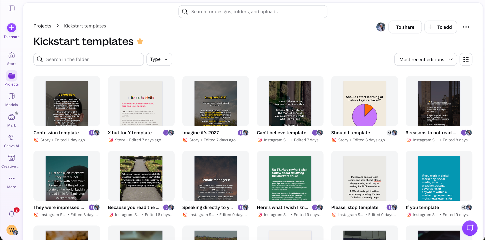
The Kickstart templates folder in Canva: every master designed, fonts and layouts locked. The skills duplicate from here, the originals never get touched.
Each one: detects the next DCT number, writes the variations, builds the Canva, the Drive folder, the Notion page and the designer brief. You approve, it ships.
The plugin · inside /if-you-template
🟦
/if-you-template, start to shipped.
🖼️
The master is ready
Layout, fonts and safe zones designed once in Canva. The skill duplicates it for each new DCT.
🗣️
Start it however you want
"/if-you-template AMO" is enough, it handles the rest. Or steer it: my real first prompt handed it a winning ad and asked for more variations of that copy. Any specificity you add just guides it.
🧠
It grounds itself before writing
Detects the next DCT number, reads the client's playbook, don'ts and current editorial context, then drafts.
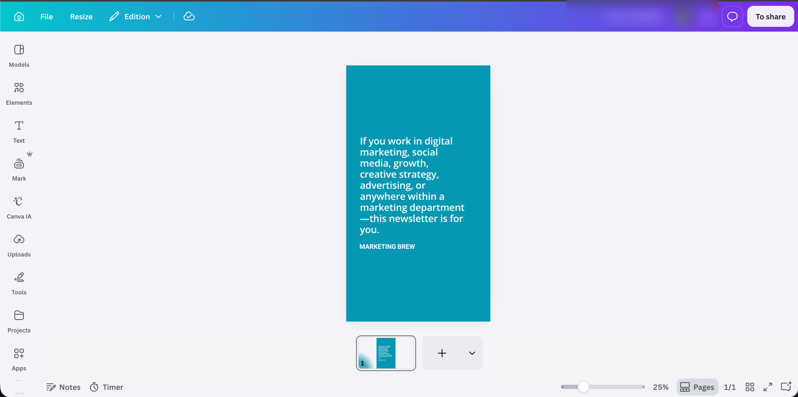
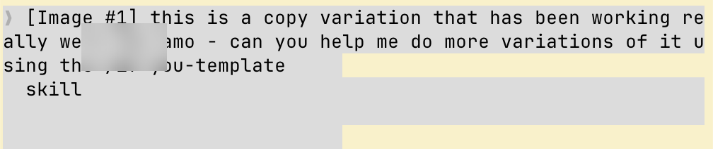
The If You master in Canva, and the actual one-line prompt that started the run
The plugin · inside /if-you-template
📝
Minutes later: the draft.
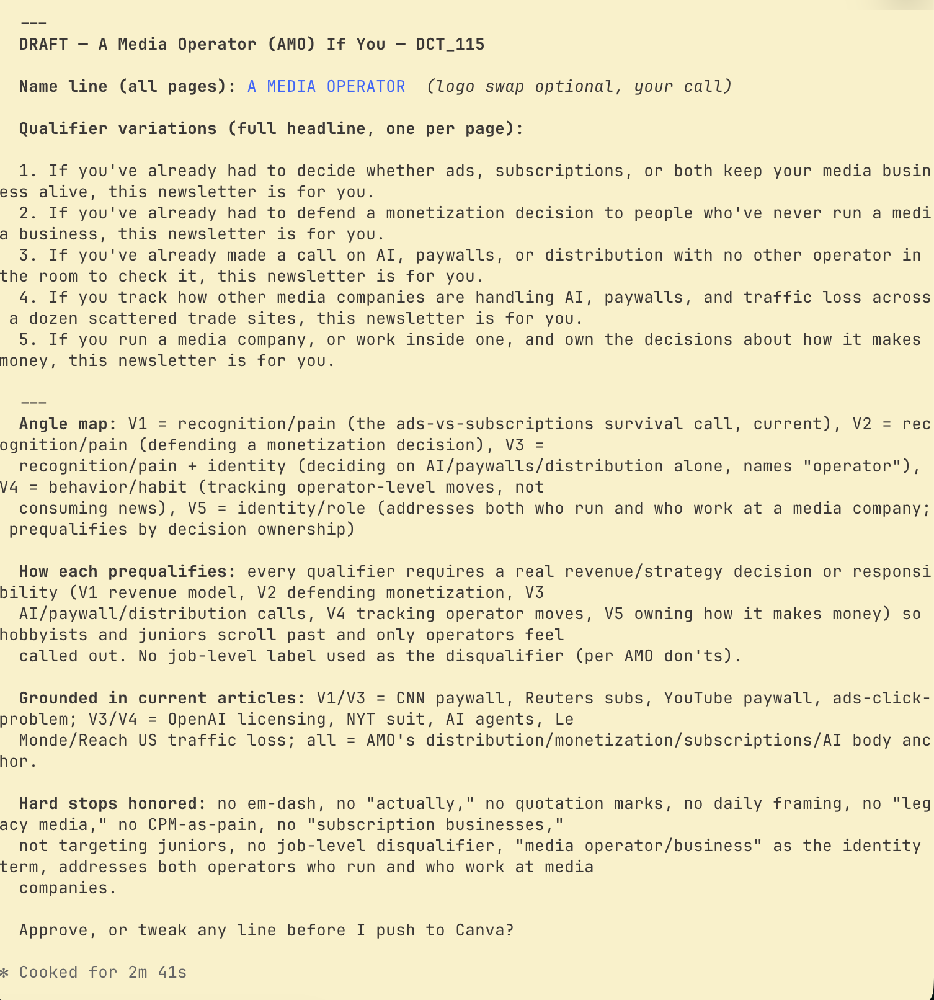
DCT_115/116 AMO If You: 5 qualifier variations, cooked in 2m 41s
🎯
5 variations, each with an angle map
Recognition, identity, behavior. Every qualifier prequalifies a real operator, so juniors and hobbyists scroll past.
🧾
Grounded and rule-checked
Variations cite the current articles they come from, and AMO's don'ts are honored automatically: no em dash, no job-level disqualifier, no "legacy media."
🔁
It ends with a question, not an action
"Approve, or tweak any line before I push to Canva?" This is the back-and-forth zone: iterate in plain English until you're happy. Nothing gets built until you say so.
The plugin · inside /if-you-template
🚢
One "approved" later: DCT_116, built.
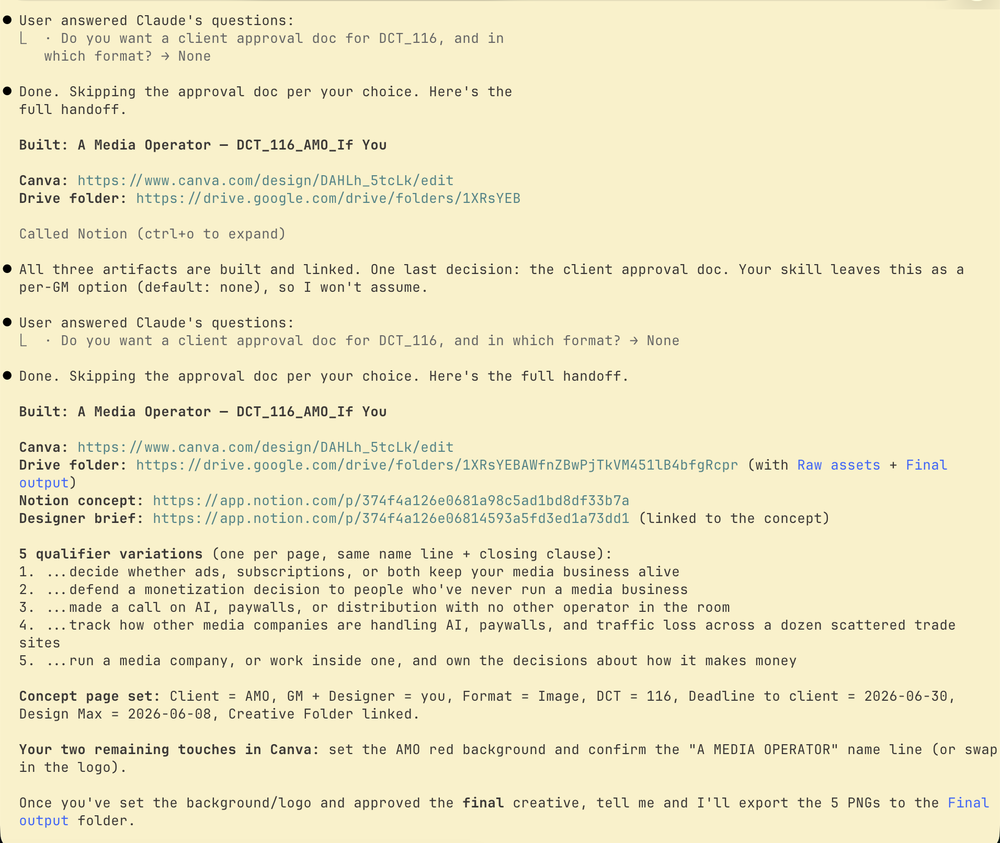
The full handoff: Canva, Drive folder, Notion concept page, designer brief
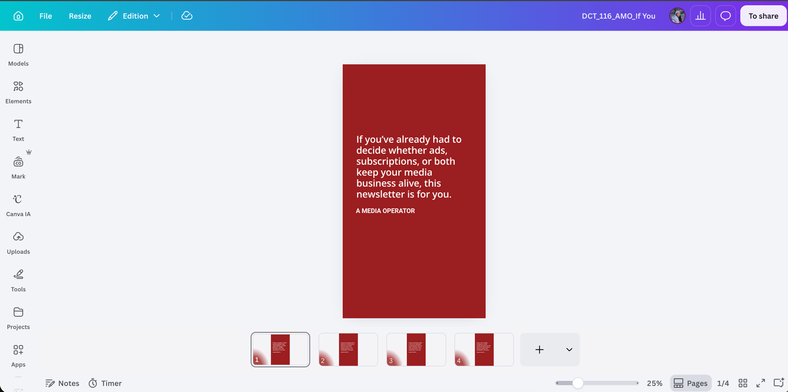
The final creative in Canva: 4 pages, one per approved variation, on the AMO master
Your only touches left: confirm the brand background and name line in Canva, approve the final, and it exports the PNGs to the Drive Final output folder. Concept page, brief and folders are already linked together.
one of 6 weekly report skills2-3h → 45 min, per client, every week
🌐
Claude reads the Substack dashboard in Chrome
Pulls total subscribers and total opens, then does the math itself: open rate and email CTR, with WoW comparison.
📈
Pipeboard pulls the Meta side
Spend, CPL, leads, CPM, ad CTR per creative, plus the fb.me links so Ruben can click straight into each ad.
✍️
Writes the report in my voice
Account overview, top 3 creatives, insights, winning angle, next steps, TL;DR. First person, no AI tells.
💬
Slack connector posts to #pm-lays
I review the draft there first. Nothing reaches the client until I've read every number.
Same pipeline, 6 clients: only the sources swap. Beehiiv for AMO and BBG, the TFM dashboard for IL, Hex for Workweek. Write the brief once per client, Friday runs itself.
Meta metrics come from Pipeboard (your ad account ID). Newsletter metrics from wherever your client lives: Beehiiv, Substack, or a dashboard Claude reads in Chrome.
🎯
2 · Your client's definition of good
The KPI and its target (CPL under $2.50, CPQL under $20...). This is what turns numbers into "on track" or "needs action."
🧾
3 · One great past report
Paste your best one as the GOOD example, and optionally a bad one to avoid. This does more than any list of rules.
💬
4 · Where it goes
Your review channel first (#pm-you), client channel only after you approve. The gate is part of the skill.
Say this to Claude, word for word
Read the howtoai-weekly-report skill
from the tfm-skills plugin. That's the
simple one. (ww-friday-report is the
multi-account complex one.)
Build my-[client]-weekly-report
based on it, with my specifics:
- Meta via Pipeboard, account [ID]
- Newsletter metrics via [Beehiiv /
Substack / dashboard URL]
- KPI: [CPL], target [$X]
- Here's a great past report as the
example: [paste]
- Draft to #pm-[me], I review first.
Then iterate, weekly: every time you correct a draft ("don't lead with CPM", "the client hates the word fatigue"), tell Claude to bake that correction into the skill. Three Fridays in, it writes the report the way you would.
The plugin · a real new report, live
🆕
A third report, from two you already have.
new client skill, in one message
New client, Thorium Valley, needs a Friday report. I didn't write one from scratch. I pointed Claude at two report skills that already work and described only what's different:
📋
1 · Hand it two reports that already work
"/ww-friday-report and /bbg-weekly-report as reference guidelines." It inherits their structure, my voice and the review gate. No blank page.
📐
2 · Spell out the metrics that matter
CPL and CVR per ad set, total spend, average purchase. Plus the health rule: flag each ad set green / yellow / orange / red against target.
🔌
3 · Point it at this client's sources
Beehiiv API for open rate + CTR per ad over the last 7d (our ads carry "dct" in the source). Pipeboard is down, so Meta comes from Claude reading Chrome.
✂️
4 · Cut what this client doesn't need
No budget pacing, no winning-angle analysis. Two sections, Meta and Beehiiv, plus a top-3 ads highlight. Then: "run a draft."
The shortcut: a new skill rarely starts from zero. Give Claude two skills that already work as the template, list only the deltas, and the first draft of /tv-weekly-report comes back ready to refine.
The actual prompt, sent live
Use /ww-friday-report and /bbg-weekly-report
as reference guidelines to create a new weekly
report skill for Thorium Valley. Call it
/tv-weekly-report.
What to report:
- CPL on Meta, and per ad set
- CVR on Meta, and per ad set
(cvr = subscriber_created / unique
outbound clicks)
- total spend
- average purchase, campaign + per ad set
Flag each ad set green / yellow / orange / red
against target. Use the Beehiiv API key
[Beehiiv API key] for open rate + CTR per ad,
averaged over the last 7d. Our ads carry "dct"
in the acquisition source.
Pipeboard is down, so pull Meta metrics with
Claude + Chrome dev tools for now.
We don't need budget pacing or winning-angle
analysis. Just two sections, Meta metrics and
Beehiiv metrics, plus a top-3 ads highlight
(best leads + CTR on Beehiiv).
Let's run a draft to see how it works.
What is a skill?
A skill is nothing more than an automated task.
🔁
A task is steps
Everything you do for a client is a sequence of steps you repeat: search, read, write, build, send.
✍️
A skill is those steps, written down
Plain English instructions that Claude follows the same way, every single time.
⚖️
Task complexity = skill complexity
A one-step task makes a 5-minute skill. A 13-step task makes a skill you refine over weeks. Same recipe, different size.
So before building any skill, map the task. Let's map two.
13+ steps, 4 tools, and it varies per GM. Complex task, so /concept-ideation is a complex skill.
What is a skill? · a simple task
And a simple task? One step.
🗣️"Analyze this ad on Foreplay for me"
/foreplay reads the ad
💬A quick review back in chat: hook, headline, body, primary text
One step in, one answer out. /foreplay is a simple skill. You could build one like it today.
What is a skill? · a simple task, for real
Here it is, actually running.
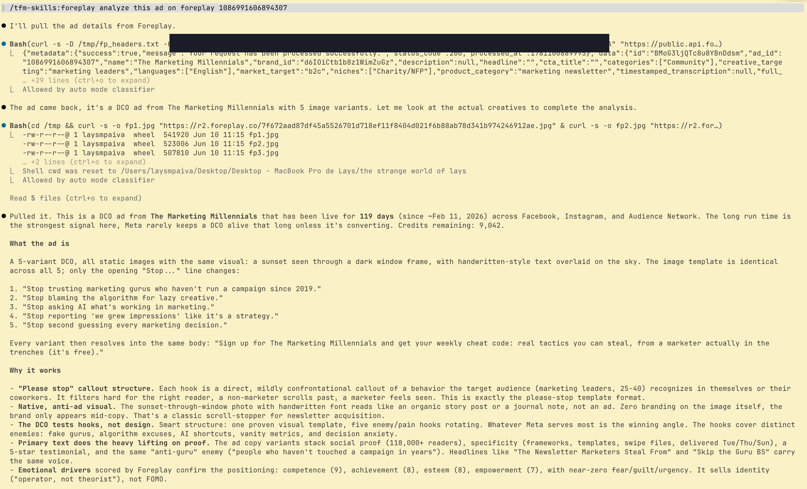
The real run: "/foreplay analyze this ad" + the ad ID. One line in, full breakdown out: what the ad is, the 5 hooks it rotates, and why it works.
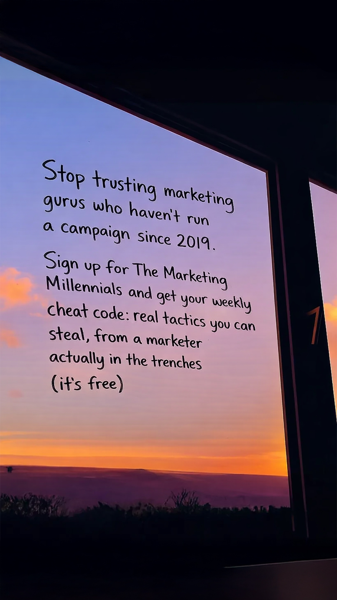
The ad it analyzed: The Marketing Millennials, live for 119 days
One step in, one answer out. /foreplay is a simple skill. You could build one like it today.
What is a skill? · the takeaway
Same recipe, different size.
/concept-ideation
13+ steps across 4 tools, with per-GM variations. A complex skill, grown and refined over weeks of real use.
complex task → complex skill
/foreplay
One step: read the ad, review the copy. A simple skill, built in minutes.
simple task → simple skill
Both were built the exact same way: writing the steps down. Start simple, your first skill should automate a one-step task. And there's a tool that writes it with you...
The skill that builds skills
Meet /skill-creator.
official Anthropic plugin · already part of the setup
/skill-creator
🆕Creates new skills Interviews you: what's the task, when should it trigger, what does good output look like. Then writes the SKILL.md draft for you.
🛠️Improves existing ones Edits or restructures any skill you already have, including your forks of the plugin skills.
🧪Tests them Generates test prompts, runs them in the background, and shows you the results so you can compare versions.
🎯Tunes the trigger Rewrites the skill's description so it fires at the right moments, and stays quiet when it shouldn't.
You never write a skill from scratch. You answer questions, it writes.
● LIVE BUILD
Let's build one, live.
The task: writing killer hooks. You want hook variations to test, you're out of ideas, and you need 5 fresh ones for your client. Simple task, one step. Here's how we turn it into a skill:
01
Run it as a prompt
Write the brief once, in chat, and watch it work on a real hook.
02
Freeze it with /skill-creator
Hand it the structure, the rules, and one good + one bad example. It writes the SKILL.md.
03
Run /hook-rewriter forever
From now on it's one line + a hook. For you and anyone with the skill.
Live build · the prompt, in full
This is the brief.
One task, five angles, clear rules, one hook. Two minutes to type, and it works. The problem: I'd retype it every time I need angles.
Inone hook that's already working
Out5 rewrites, one per angle: confession, identity, specificity, counterintuitive, social proof
Recognize the hook? It's Hook 2 from the DCT_167 run you saw earlier. Ruben's winning angle, about to become five.
Typed live, in chat
Rewrite this hook 5 ways, one per angle:
confession, identity, specificity,
counterintuitive, social proof.
Rules:
- Keep the original promise intact
- Under 15 words, first person
- Plain language: no hype words, no
"game-changer", no "unlock"
- No em dashes
- Label each rewrite with its angle
Hook: "I've spent over 1,000 hours
figuring out Claude, so you
don't have to."
● LIVE BUILD
Now we freeze it.
One message to /skill-creator turns the prompt into a permanent skill. A good transformation brief has four parts:
Triggerwhen should the skill fire
Structurewhat goes in, what comes out, in what format
Rulesthe guardrails, copied from the prompt that just worked
Examplesone good output and one bad output, so it knows the difference
This recipe builds any skill. Swap the task, keep the four parts.
The transformation prompt, sent live
/skill-creator create a skill called hook-rewriter.
Trigger: when I run /hook-rewriter or ask for
hook variations or angles.
Structure: input is one hook that already works.
Output is 5 rewrites, one per angle, labeled:
confession, identity, specificity,
counterintuitive, social proof.
Rules:
- Keep the original promise intact
- Under 15 words, first person
- Plain language: no hype words, no
"game-changer", no "unlock"
- No em dashes
- Label each rewrite with its angle
Good output:Confession: "I'll admit it: I burned 1,000 hours
on Claude so you can skip them."
Identity: "I'm the person my whole office asks
about AI. This is why."
Specificity: "1,000 hours of Claude testing,
condensed into a 5-minute read, twice a week."
Counterintuitive: "Stop trying to keep up with
AI. I already did it for you."
Social proof: "Thousands of readers skip the
1,000 hours I spent figuring out Claude."Bad output:"Unlock the game-changing power of AI in
minutes!" (hype words, promise lost, no label)
Keep it simple: just the SKILL.md, no scripts.
The payoff
Every time, before
"Rewrite this hook 5 ways, one per
angle: confession, identity,
specificity, counterintuitive, social
proof. Keep the promise, under 15
words, no hype words, label each..."
retyped every time you need angles
Every time, after
/hook-rewriter"I've spent over 1,000 hours figuring
out Claude, so you don't have to."
Write the brief once. Never again. And once it's in the plugin, "never again" applies to the whole team.
Where this goes
Then you build another. And another.
This is my /skills list today: 43 skills, each one automating one thing I needed. And they talk to each other:
→/competitor-research feeds its concept seeds into /concept-ideation
→/foreplay pulls the inspiration the templates build from
→/ads-launch-check QAs what the concepts ship
→/newsletter-analyzer feeds editorial context into every template
The ones that proved useful became the TFM plugin. One skill at a time, the whole workflow connected itself.
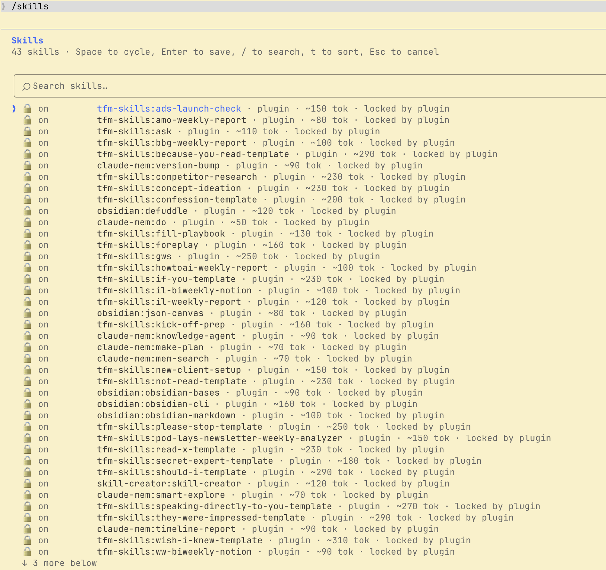
My /skills list, today. It started with one.
Your turn
Build one. Ship it to everyone.
Pick one task you repeat every week that follows the same steps
Build it with /skill-creator, or send me a one-pager: task, steps, example of good output, don'ts
I review it and ship it to the plugin, with your name on it
Deadline: Sindy will set it. Next team call opens with your skill running live.
Zero excuses
How to start: one page.
🚀 Step 1: the Start Here page
Everything is there: the one-time install (Claude desktop app in CODE), the GitHub step, and every skill as a card with its own tutorial. Once installed, my updates sync to your Claude automatically.
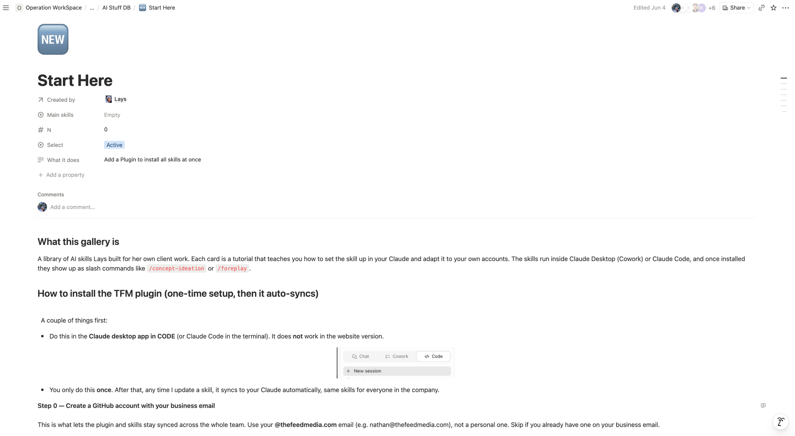
AI Stuff DB → Start Here, in Notion
🤝 Optional: book 30 min with me
If you'd rather do the setup together, or build your first skill with backup, grab a slot. We'll get you running on your own accounts in one call.
The slides, the mind maps, the animations, every screenshot placed where it is. Built in a Claude chat, the same way everything else you saw today was.
The actual chat, recorded this morning. It really is skills all the way down.
The floor is yours
Questions?
About any skill, the setup, skill-creator, or the thing you're already imagining automating.